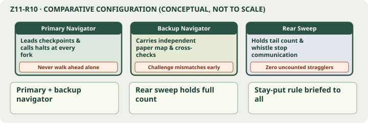

Z11-R10 · Navigation, weather and rescue · Reconstruction draft
Assign group navigation roles and emergency accountability
Share map awareness and head-count duties across the party so one distracted leader never leads the group off-route.
Lineage · B014 reconstruction · r01 slot R10 (original B014-P10 missing)
When it applies · Group travel in forests, mountains or winter terrain; reconstructs missing B014-P10.
Equipment · Multiple map copies, shared route plan, whistle for every person and agreed stop signals.

Actions
- Assign a primary navigator, a second independent map checker and a rear sweep so route decisions are double-checked and nobody drifts out of sight.[E11, E02, ED]
- Brief every participant—including youth—on the day's checkpoints, turnaround time, whistle stop signal and the strict rule to stay put if separated.[E11, T06, N09]
- Pause at every trail intersection until the rear sweep arrives and confirms the full group count before anyone steps onto the next leg.[E11, ED]
Failure recognition · Leaving navigation exclusively to one phone-holding hiker who walks ahead out of voice range past an unsigned trail fork.[E11, T06]
Verify · Confirm at least two people carry independent maps and every member knows the stay-put rule and whistle stop signal.[E11, E02, ED]
Stop or change course · If visual/voice contact breaks or two navigators disagree on location, halt the entire group immediately until position is jointly resolved.[E11, T06, ED]
Evidence and editorial notes
- E02 · NPS · Ten Essentials (current web edition)
- Section: Navigation; insulation; emergency shelter; emergency food and water · Conditions: Outdoor trips; adjust kit to season and route
Support: Carry essential systems including navigation, insulation, light, water and emergency shelter.
Limitations: Carrying items without practice or cold-weather verification does not ensure readiness. · Conflicting evidence: None; baseline kit system architecture.
Editorial note: Supports failure-mode packing and kit verification cards. · Specialist reviewer: Field education and search and rescue
Primary source · checked 2026-11-24 - E11 · NPS · Hike Smart (current web edition)
- Section: Plan your hike; Stay together · Conditions: Groups on hiking routes
Support: Choose a route suited to the group's abilities and hike at a pace that keeps the group together.
Limitations: Fast hikers moving ahead at junctions is a leading driver of preventable separation. · Conflicting evidence: None; aligns with SAR prevention principles.
Editorial note: Core reference for group accountability and pacing cards. · Specialist reviewer: Group leaders and search and rescue
Primary source · checked 2026-11-24 - N09 · NPS · Outdoor Emergency Plan (current web edition)
- Section: If You Get Lost; Seek help · Conditions: Lost hiker who cannot safely retrace steps and has sought rescue
Support: Report last known location and landmarks. Stay put while awaiting help unless an immediate threat requires getting to safety.
Limitations: Navigation, signaling method and safe movement depend on site and responder instructions. · Conflicting evidence: See A02 claim audit for boundaries.
Editorial note: Core evidence for lost-person psychology, signaling and SAR coordination cards. · Specialist reviewer: Search and rescue
Primary source · checked 2026-11-24 - T06 · NPS · Outdoor Emergency Plan (current web edition)
- Section: If you get lost or hurt; call for help · Conditions: Outdoor US emergency
Support: Communicate location, last known point, situation and needs. Stay put when unable to establish a safe route unless immediate danger requires movement.
Limitations: Cell signal is unreliable in backcountry terrain; pre-trip plans bridge communication gaps. · Conflicting evidence: None; core lost-person decision rule.
Editorial note: Foundation for stay/signal/move and dispatch handoff cards. · Specialist reviewer: Search and rescue
Primary source · checked 2026-11-24
Source lineage · B014 reconstruction · r01 slot R10 (original B014-P10 missing) · Classification · Reconstruction draft.